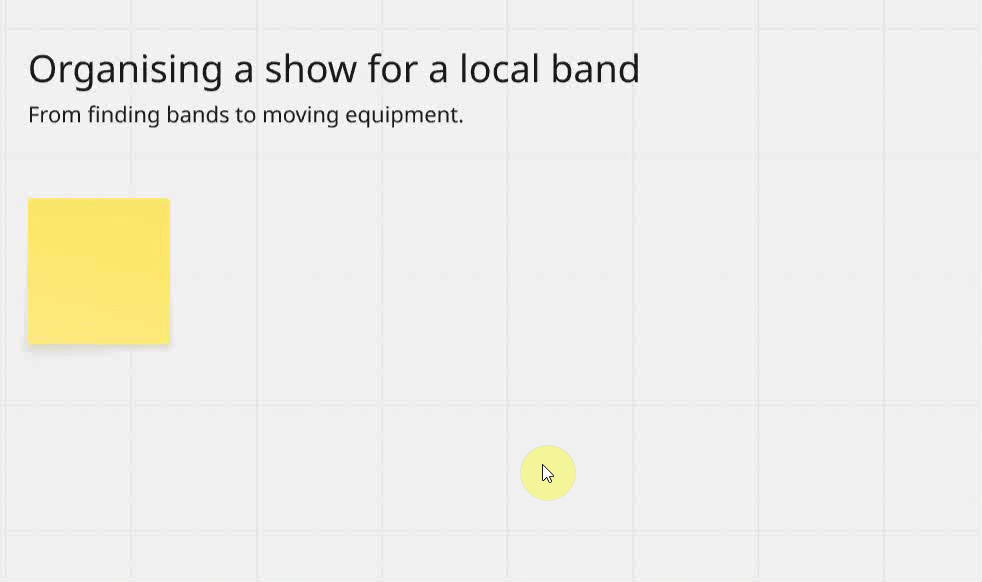
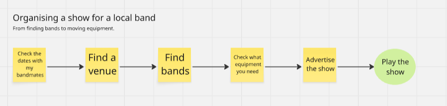
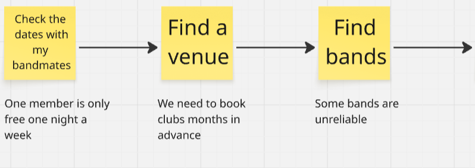
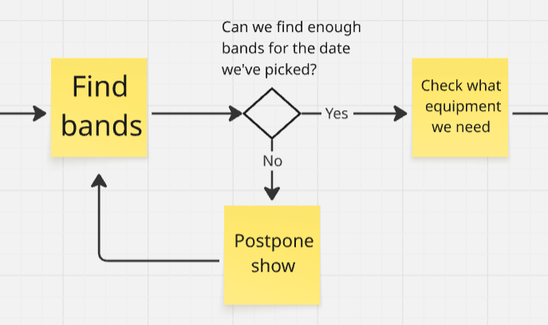
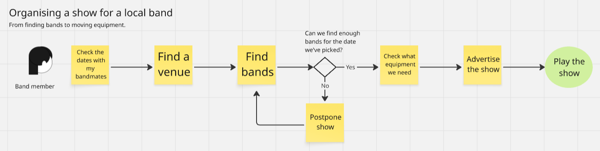
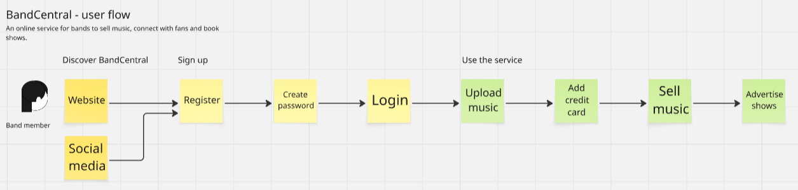
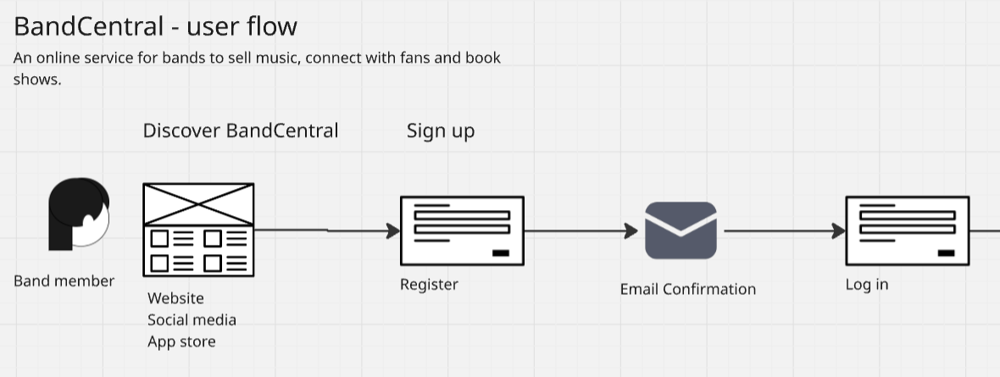

Introduction
UX Designers create wireframes and prototypes to describe new products and test these out on real people. Apart from designing screens, we also make maps of new services to get a top-down view of the whole product. In this article I'll describe techniques for mapping out a new product.
I'd recommend that you:
- Make UX mapping a 'team sport': create maps with your whole team, using collaborative software
- Keep your maps simple: avoid unnecessary frills and focus on making the map brief and scannable
- At the end of a project or stage of work, make a permanent version of the map to keep your design and research alive
In this article I'll use the terms map, user flow, process and diagram more or less interchangeably. A UX diagram can describe either:
- A process that people go through in their daily lives - such as booking a flight or shopping for food; or
- A journey through a service, including a web service, website or app
Mapping a process
At the start of a project you'll usually discuss what you're planning to research or build.
The advantage of online boards like Miro, Mural and LucidChart is that you can map things out in real time.
If you're being asked to build a new online service, app or website, your team members will often know a lot about your users or customers. If there aren't any existing maps, you can use a board to quickly capture a process, based on the conversation you have.
Here's an example of a process from the real world - organising a show for a local band:
Miro lets you click on a post-it to add an arrow then a second post-it. Take it advantage of this to build your flow as quickly as possible.
You can engage with team members by mapping the board in real time. Alternatively, if you've spoken to someone and taken notes you can turn the notes into a map in your own time.
The actual process of booking a show for a local band with limited time and money is a lot more convoluted than this. A map is just a version of reality that's easy to digest.
Pay attention to the words people use
Maps help capture the team's ideas as well as the language they use - for example, would your colleagues say 'book a show', 'run a show' or 'organise a show'?
You also need to use the real words of your users, based on your interviews. In some cases, the users will use different terms from the ones your team use. Research will help bring that out and help your team decide what terms to use in your websites and apps.
This article is about User-Centred Design: my advice is start every project by talking to real users and customers.
Titles, arrows and text
I'll now move on to some of the details of making a 'user flow'. Start the map with a title like 'Organising a show for a local band'. You can add a tagline like 'From finding bands to moving equipment', if that's useful. Keep each post-it brief and to the point. Try to start each post-it with a verb, such as 'book', 'find', 'register' and so on.
Connect each post-it with arrows. That will quickly tell people the information is flowing from left to right, which is the same as the 'reading order' we use in the West. You want your diagram to be as 'telegraphic' as possible - it should communicate instantly without making people think too hard.
You don't need to polish the map to look perfect. The text in each box may be a different size, but that's fine for now. At the end of a project or a piece of work you can polish the map. I'll often re-create it in Figma or another design program.
If there's a final stage like 'Play the show', you can give it a different colour or shape.
Add annotations
After you create the steps you can add annotations. For example, under each post-it you can add complaints, or 'pain points' you've found through research. This can be something annoying or time-consuming, such as calling a contact center and waiting for hours on the phone.
Decision points and alternative routes
If the flow depends on a decision or the answer to a question, add a square rotated 45 degrees. Add the question above the square. Label the routes which follow the question - such as 'yes or no'. Don't waste time trying to fit the question into your tilted square - it will look wonky and be hard to read.
Make the user flow about as tall as your laptop screen. That way, people can see everything by scrolling from left to right. Having to scroll vertically as well as horizontally creates extra effort. If the flow is really complicated and contains a lot of branches, consider splitting these up in a few diagrams, each with a different title.
Text-only versions
If any team members don't have access to the board or the software you're using, turn the flow into a set of numbered steps. I might break my diagram down into the following list:
Organising a show for a local band
- Check the dates with my bandmates
- Find a venue
- Find bands
- Question: Can we find enough bands for the date we've picked? - if no: postpone the show until we find bands
- Check what equipment we need
- Advertise the show
- Play the show
Note I've used the first person 'we' in this example. Using the second person 'you' or the third person 'they/he/she' is also fine, as long as you're consistent.
I find myself sharing this version of a user flow fairly often - for example, in an email or in a Slack conversation. On the internet, text works better than almost anything else.
In UX design we often talk about 'accessibility'. We make designs which can be used by as many people as possible. You may work with people who are blind or have poor motor skills. On the other hand, someone might need to access the flow in a place with poor internet connectivity. Using a text version helps keep the diagram accessible.
The complete user flow looks like this:
Humanising the diagram
I like to add a human face representing the user, at the start of the flow. Overall, the diagram above has a rough, slightly cartoony feel. That fits my personal style: I like to encourage conversations. Deliverables which look rough and ready might encourage people to ask questions. Other designers will be more comfortable with a more polished look and feel.
Another thing to note: the larger the diagram gets, the smaller the text becomes when you share the diagram as a graphic. It can be annoying to open diagrams as email attachments and zoom in to read what's in every box. Again, for that reason, I'd recommend capturing a text-only version of the flow and sharing that version with people outside your team.
Mapping out a new online service, website or app
The second type of mapping involves creating a 'skeleton' of a new product - such as a website, online service or app.
A very simplified flow of an online service might look like the following:
One advantage of this type of map is that it's a great talking point at the start of a project. In the past, when we usually shared office spaces with colleagues we used to sketch screens by hand, often on a whiteboard. With remote working, collaborating with other people becomes more of a challenge. For me, coming up with a very rough, provisional flow of screens on a board is a good way to get people thinking and talking.
If I run a workshop online I may share my screen and create the map while people talk. If people have ideas or questions I type these up on extra post-its and annotations. I add these next to the main flow. You can also run meetings where you challenge people to create their own map as part of a workshop, then compare different concepts of how the product will work.
You can capture as much detail as you like - for example, under 'Register' you might add a stage for the user having to get a code from an email in order to register with the service. You might also have two different journeys, one for an app and one an online service using a laptop or desktop.
Your conversations with your colleagues let you know how much detail to include, based on what's most important at the time.
Add icons
For a map of a new product, I often swap out the post-its for icons:
Platforms like Miro offer basic icons. If you add icons, the map might be more aesthetically pleasing. It also communicates information more quickly. An icon with a label can be one of the fastest ways to communicate. Offer the label underneath the icon so that people can see the image first.
If you have good eyesight or you've zoomed in on the image, you'll notice one of the connecting arrows has a small kink in it. If you use boards rather than art packages to make maps, you'll often have imperfections like this. Use boards as a short-term solution and polish up your maps at the end of the project.